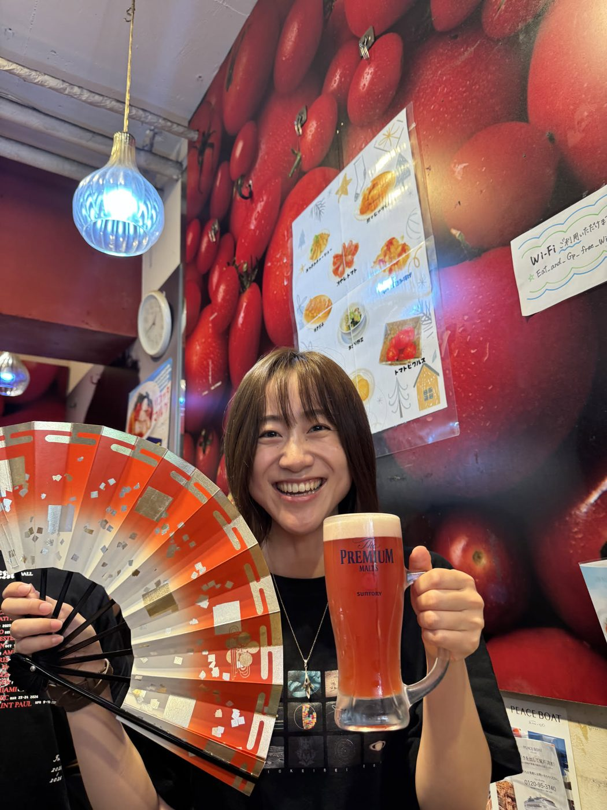

01Shimbashi Night
An evening of bar-hopping in Shimbashi, the after-work heart of Tokyo, with a guide in kimono. We meet at SL Square and wander into the izakaya lanes by the Karasumori exit. Not a tourist strip, just Tokyo's real after-work night.
What you'll do
We start with a toast at a sit-down izakaya and try the day's specials. Yuri takes care of the little alleys, how to walk in without breaking the regulars' easy mood, and how to order. You can add one slightly special stop, like fugu or seasonal small plates. We end by the steam locomotive at SL Square, talking over the night.
What's included
Your private guide, help choosing and booking places, and help with ordering. Food and drinks are paid on the day, at cost.
Good to know
This is not a stand-all-night tour. Non-drinkers enjoy it just as much with soft drinks. Solo travelers are welcome.
- Sit-down bars
- Guided in kimono
- Small groups, solo welcome